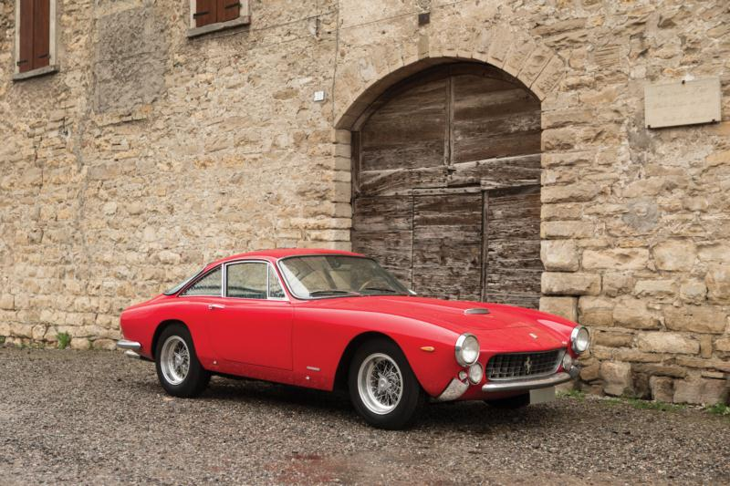

Multimedia
Los elementos embebidos y multimedia veremos como utilizarlos
-IMÁGENES, VIDEOS Y AUDIO, ELEMENTOS GRÁFICOS DE NAVEGACIÓN
Imagenes
- gif
- png
- svg
Video y audio
- webp
- mp4
- ogg
- webm
-Imagenes-


Uso de imagenes responsive en html, comodo adatado
Comodo sin adaptarse a pantalla

Lusso Adaptado con img src
